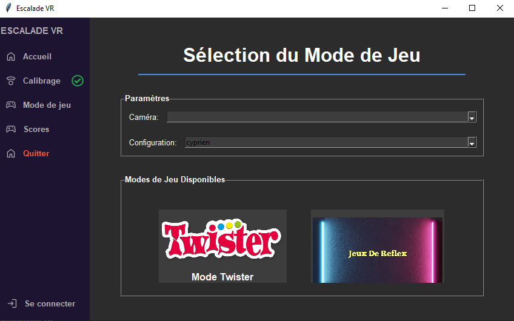

Escalade
Date: 09-2024
Context
Mon travail
Récap
Le projet Escalade en AR/VR consiste à une application en réalité augmentée ou le but est de pouvoir pratiquer des mini-jeux qui projeté sur un mur d’escalade afin de combiner l’aspect sportif de l’escalade et le côté ludique des mini-jeux
Il utilise une caméra pour détecter le joueur sur le mur et un vidéo projecteur pour diffuser le jeu sur le mur. Le but principal de l’application et de pouvoir la présenter pour la fête de la science de 2025 avec des fonctionnalités comme
La connexion/inscription pour les utilisateurs
• Le calibrage grâce au « charucoboard »
• Les différentes interfaces visuelles
• Score/Leaderboard: Permet de voir le score des meilleurs joueurs
• 2 modes de jeu :
o - Twister: Ce mode est inspiré du jeu de société du même homonyme. Le but est
d’attraper les prises de la même couleur, qui sont choisi aléatoirement sans tomber
et dans un temps imparti
ESCALADE
o - Réflexe: Dans ce jeu, les prises vont changer de place sur le mur, le but sera d’êtare
assez rapide pour attraper ces prises pour gagner des points
Dans le cadre du projet d'escalade, mon travail a consisté à concevoir les différentes pages et onglets, ainsi qu'à gérer la base de données. Par exemple, j'ai développé la page permettant de consulter l'historique des scores, en intégrant les requêtes SQL associées. Pour ce faire, nous avons utilisé la bibliothèque Tkinter, qui permet de créer des applications avec des interfaces graphiques compatibles avec Windows et Linux. En ce qui concerne la gestion des interfaces graphiques, nous avons implémenté le design pattern MVC (Model-View-Controller), permettant, par exemple, qu'une modification de valeur via un formulaire (comme la connexion de l'utilisateur) actualise automatiquement l'interface.

Voici l'interface Python du projet Escalade VR. À gauche, un menu permet de naviguer entre les différentes pages, tandis qu'à droite se trouve la page principale. On y retrouve un onglet pour consulter l'historique des scores, un autre pour lancer un mode de jeu, ainsi qu'une page dédiée au calibrage.
Comme mentionné précédemment, j'ai également géré la base de données en récupérant les informations grâce à des requêtes SQL au démarrage de l'application. Pour simplifier le projet et le rendre plus 'portable' lors de la fête de la science, tout en assurant son fonctionnement même hors connexion, j'ai choisi d'utiliser une base de données SQLite, directement intégrée au projet. J'ai également utilisé la bibliothèque SQLAlchemy, un ORM, pour faciliter la gestion de la base de données et permettre la réalisation de migrations.
Pour conclure, ce projet, réalisé durant mon année d'alternance à l'université, m'a permis de réapprendre le langage Python que je n'avais pas utilisé depuis le début de ma première année. J'ai également appris à utiliser la bibliothèque Tkinter pour les interfaces graphiques, ce qui était une première pour moi. La gestion de projet a été essentielle, car nous étions un groupe de quatre personnes, et il était crucial de s'entendre et de communiquer pour comprendre les besoins de chacun et avancer efficacement.